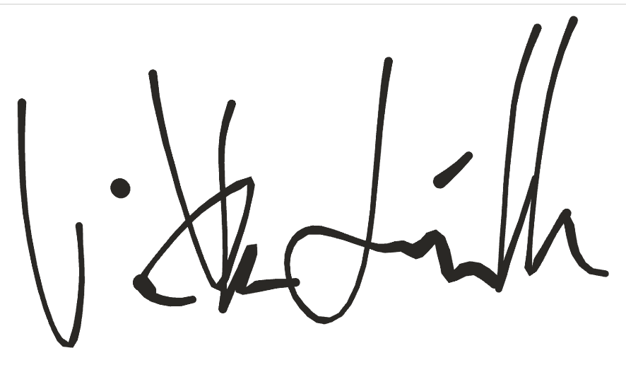

Felis Noetica
INTELLIGENTIA ET CONCORDIA
Cattery of European Shorthair Cats (FIFe reg. no. 7944)
CERTIFICATE OF ORIGIN AND NAME
Documentum originis et nominis
This officially certifies the origin and name of
Amálie
Amálie of Felis Noetica
ID: FS01-G02-F001
Sex: Female (♀)
Date of Birth: 14 July 2026
Coat: Tricolour (Calico) (O/o S/s)
Dam: Sibyla (G1, O/o S/s)
Sire: Sokrates (G1, O/Y s/s)
Meaning & Dedication: Amalie Emmy Noether
Named in honour of German mathematician Amalie Emmy Noether, whose breakthrough theorem revealed the fundamental connection between physical symmetries and conservation laws of energy and momentum — establishing one of the cornerstone foundations of modern theoretical physics.
Given at Brno, 20 July 2026

Viktor Lošťák
Breeder / Felis Noetica
Digital pedigree and verification
FIFe reg. no. 7944 · ČSCH reg. no. 30214 · A VIRTÙ RESEARCH & TECHNOLOGIES s.r.o.